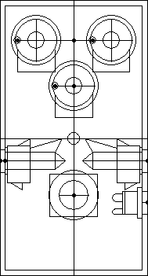
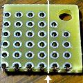
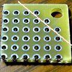
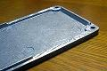

MXRサイズに関するメモ
2008年04月01日 カテゴリー：メモ・雑記
私は大抵GarrettaudioのsizeA（61×112×31）のケースを使ってるのでそれに関するメモ。一応『MXR"Phase 90"などと同等サイズ(Hammond 1590B 近似サイズ)』らしいけど、若干誤差などはありえる。ネジがバカになりやすい気がする。すべてのネジに言えるけど、ネジはいったん左に回し、ストンと落ちる感覚があってから右に回す。
※以下ケースを縦に使う場合
基板の大きさに関して
ユニバーサル基板の場合、横22穴×縦20穴まで可能（縦はがんばればもうちょいいけるかも）。ただしフォンジャックはマル信無線の小さいやつ、DCジャックも内側から取り付けの小さいものを使って、ギリギリのジャック位置にする必要がある（下図参照）。適用例：HAT（Modified BOSS AC-2）

（JWCADというフリーソフトで作成）
横を22穴にする場合、基板の穴と穴の間でカットする必要がある。または穴に沿って切った後削る必要がある。下写真参照。

※端がケースに触れるおそれがあるため、レイアウトの端がアースでないときはやらないほうがよい。逆に横22穴でレイアウトを作る場合は端っこはアースにすべき。
縦は16穴ぐらいだとSwitchcraftのフォンジャックでも余裕がある。ネジ穴があるため角を切る必要があるが、ギリギリに切った方が多少余裕が出る。下写真参照。

※やはり端がケースに接触するおそれがある。
ケースの厚み（高さ）に関して
ポット厚みデータ
16mm/シングル（Garrettaudio）：9.3mm
9.5mm/シングル（Garrettaudio）：6.8mm
16mm（東京コスモス製？）：8mm
[Garrettaudio 16mm/シングルのポットを用いる場合]
あまり大きな電解コンデンサだとフタがしまらない。一般的電解コンデンサ（高さ11ミリ程度）は大丈夫。また、レイアウト上の端に電解コンデンサがあると、裏フタのでっぱりにあたってフタがしまりにくくなることがある。特に横22穴のレイアウトでは端に電解コンデンサを配置しない方がよい。はんだ面を裏フタ側にするならば大丈夫かもしれない（未確認）。
[ミニスイッチをつける場合]
ミニスイッチ（普通のミニトグルスイッチ）をつける位置に電解コンデンサがあるとフタがしまらない。ICソケット+ICの高さぐらいだと裏フタの出っ張りを削れば（下写真参照）なんとか入る。でもおとなしくフットスイッチの横につけるかsizeAAにした方が無難。横21穴のレイアウトならいけるかもしれない（未確認）。Ginga Dropsの超小型トグルスイッチなら大丈夫かもしれない（未確認）。
